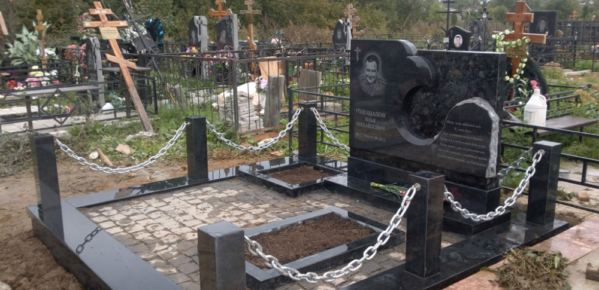

Установка памятников
Установка надгробий является одним из основных видов деятельности компании «ВАШ ГРАНИТ». Это заключительный этап комплексной услуги «изготовление памятников». Мы являемся единственной фирмой в столице, принимающей заказы на монтаж надгробий на всех кладбищах Москвы и области.
Стоимость услуги зависит от габаритов композиции. Установка памятников:
- из любого вида натурального гранита;
- из полимерогранита.
Установка изделий из металла
На монтаж металлических элементов оформления захоронений действуют следующие расценки:
- оградка;
- скамья;
- стол.
Установка изделий из гранита и гранитополимера
- цоколи (полное оборудование с созданием фундамента из бетона;
- стол;
- скамья;
- цветник.
При заказе надгробия бесплатно устанавливается ваза.
Дополнительные услуги
Компания «ВАШ ГРАНИТ» предлагает ряд дополнительных услуг. Вы можете заказать для оформления захоронения:
- монтаж плитки;
- укладывание щебня;
- транспортировку демонтированного старого надгробия;
- уборку строительного мусора.
Стоимость работ по благоустройству территории, услуг сезонной уборки захоронений отражена в разделе «Благоустройство».
Наши преимущества
Компания «ВАШ ГРАНИТ» обеспечивает каждому клиенту максимальное удобство. К нашим преимуществам относятся:
Установка надгробий на всех кладбищах, расположенных в столице и области.
Строгое соблюдение списка работ, указанного в ГОСТ, предусмотренного для монтажа могильных памятников.
Отсутствие необходимости оформления документов, получения разрешений от администраций кладбищ.
Наличие сертификатов на проведение работ по установке памятников на захоронениях в Москве и МО у всех специалистов.
Все работы по монтажу проводятся в течение часа, в обязанности заказчика входит только проверка и приёмка работ.
Приезд бригады установщиков выполняется в течение 10 минут.
В штате установщиков надгробий только российские граждане из центральных субъектов РФ.
На выполненные работы выдается гарантийный срок.
Изготовление и установка памятников
Место захоронения необходимо подготовить к предстоящей установке памятника. В подготовительные работы входит устранение старого надгробия и выравнивание основания для новой композиции.
После этого оборудуется бетонный фундамент для памятника. Площадь заливки рассчитывается с учётом габаритов надгробия. Оптимальной глубиной основания для стелы является 20–80 см, для надгробий и цветников — 10–30 см. Параметр зависит от типа грунта, климатических условий.
Спешка в процессе установки памятника недопустима. Монтаж выполняется только после полного застывания бетонного фундамента.
Первоначально формируется подставка под памятник, к ней примыкают цветники. Элементы фиксируются на бетонной смеси, правильность положения контролируется строительным уровнем.
Установка арки, стелы осуществляется на заключительном этапе. Стабильность положения конструкции обеспечивает металлический стержень. Для него имеются специальные отверстия в обоих элементах.
В фиксации используется цементный раствор. Работа считается законченной после всех операций по монтажу памятника.
Окончательная цена установки стандартного набора элементов в нашей компании составляет примерно пять тысяч рублей. В него входят: стела и подставка, цветник и надгробная плита.
При выполнении заказа на изготовление и установку мемориального гранитного комплекса, элитных эксклюзивных композиций цена рассчитывается в размере около 30% от общей стоимости заказа.
Детальный процесс установки на примере памятника из гранита
Монтаж памятников на замерзшей почве не допускается. Это приведет к появлению различных видов повреждений из-за изменений структуры грунта под влиянием перепадов температур. Мы ответственно относимся к работе, учитываем данный фактор. Установка могильных постаментов, надгробий выполняется с середины мая по середину ноября. Существует еще одно ограничение. С момента захоронения до монтажа памятника должно пройти более года. Этот период необходим для полного проседания почвы, качественной, надежной установки.
В работах по монтажу памятника потребуется набор инструментов, приспособлений:
- лопаты штыковые;
- резиновый и стандартный молоток;
- мастерок, шпатель;
- отвертки или шуруповерт;
- пила-ножовка;
- угольник и строительный уровень;
- лист из металла;
- ведро;
- пистолет, распределяющий герметик.
В работах потребуются расходные материалы:
- компоненты для раствора;
- деревянные элементы для опалубки;
- герметик с морозостойкими свойствами;
- швеллер №10 – 1 м 60 см;
- металлопрокат для арматуры;
- проволока для связывания элементов каркаса;
- метизы.
Процесс установки гранитного памятника занимает два дня. Детальное рассмотрение этапов поможет получить представление об объемах выполняемых работ.
ПЕРВЫЙ ДЕНЬ
Этапы проведения монтажа памятника мы будем рассматривать на среднестатистическом варианте. Размеры такого участка составляют 2,4х2,2 м. Визуальное определение границ могильной ямы позволяет выбрать место для проведения установки памятника. Определить её точные контуры позволяет разница в плотности цельной и вскопанной почвы. В нашем примере размеры ямы составляют 2х1 м. При помощи металлического прута размечаются точные границы постамента, устанавливаются колышки. Земля в этом месте выравнивается.
Установка гранитного комплекса
- На бетонную заливку укладывается металлический швеллер в месте расположения подставки для памятника. В остальных зонах фундамент укрепляется при помощи арматуры. Элементы соединяются посредством вязальной проволоки. Создаётся прочный, надёжный каркас. В конструкцию наливается густой цементный раствор, высота заливки не достаёт до поверхности почвы примерно 3 сантиметра. Это необходимо для маскировки бетонных опорных точек.
- На поверхности конструируется опалубка из доски. Рамка устанавливается на уровне 4–5 сантиметров над поверхностью земли, проверяется точность параметров измерением углов, диагоналей. В опалубку заливается слой раствора, опорные точки при этом остаются открытыми. Они укрываются почвой позже, когда бетон окончательно застынет.
- После застывания раствора опалубка демонтируется, фундамент для установки памятника готов. На него будет устанавливаться гранитная композиция. Время застывания определяется маркой цемента, условиями окружающей среды. В летнее время этот период составляет не более суток. Полноценный процесс застывания бетонной массы занимает около месяца.
ВТОРОЙ ДЕНЬ
- Создается раствор густой консистенции. Он потребуется для фиксации подставки. Она устанавливается с использованием строительного уровня. Бетонная масса укладывается в местах размещения бруса. Сначала монтируются длинные элементы, затем короткие, снова проверяется правильность положения элементов.
- Плотно забиваются раствором отверстия, имеющиеся в стеле, подставке. Укладываются бруски, на которые будет ставиться стела (можно посмотреть их расположение на схеме). Металлический стержень устанавливается в отверстие в подставке, при помощи пистолета на ее поверхности в местах, где будет контакт со стелой, наносится герметик. Он распределяется аккуратно, небольшим слоем, чтобы исключить загрязнение зон, в которых не будет арки.
-
Специалисты поднимают, медленно, осторожно
опускают стелу на бруски под углом. Центрируется
фиксирующий стержень с отверстием в стеле. После
этого один край медленно приподнимается, из-под
стелы удаляется брусок. Такая же операция
выполняется с другой стороны. Этот процесс
проводится с предельной аккуратностью, чтобы
исключить риск появления сколов, других
повреждений кромки. Стела выравнивается по
уровню, выполняется затирка швов в местах
соединений элементов.
После того, как все детали будут установлены, качественной почвой засыпается полость цветника. - Заключительным этапом установки являются работы по благоустройству территории. Выполняется уборка на месте захоронения, высаживаются растения в цветнике. На этом услуга по установке памятника считается завершенной, проводится приемка выполненных работ заказчиком.